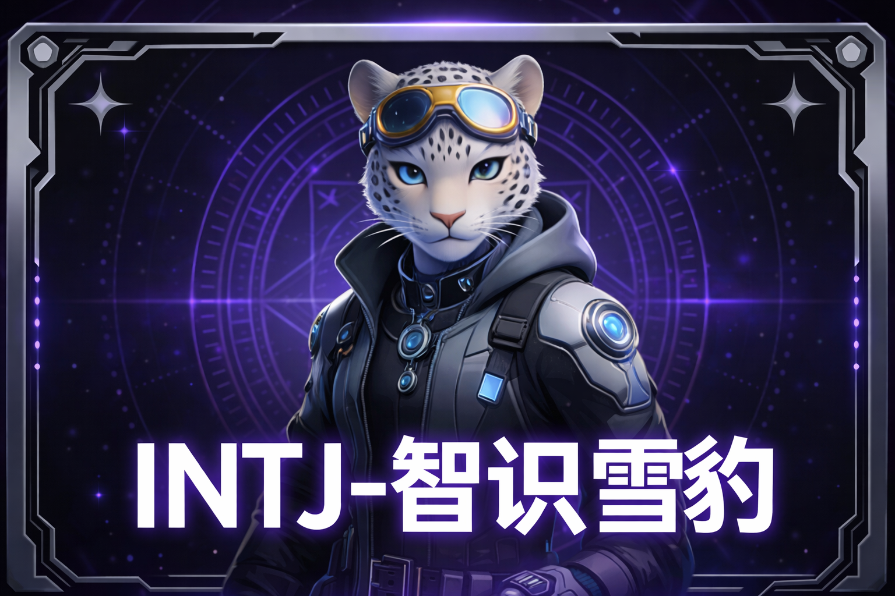
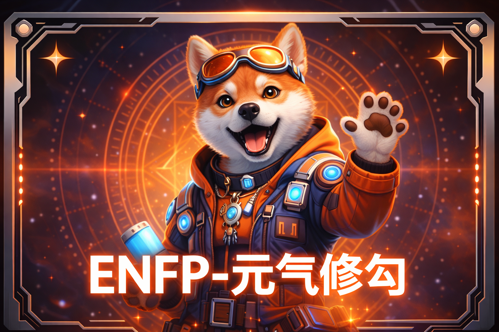
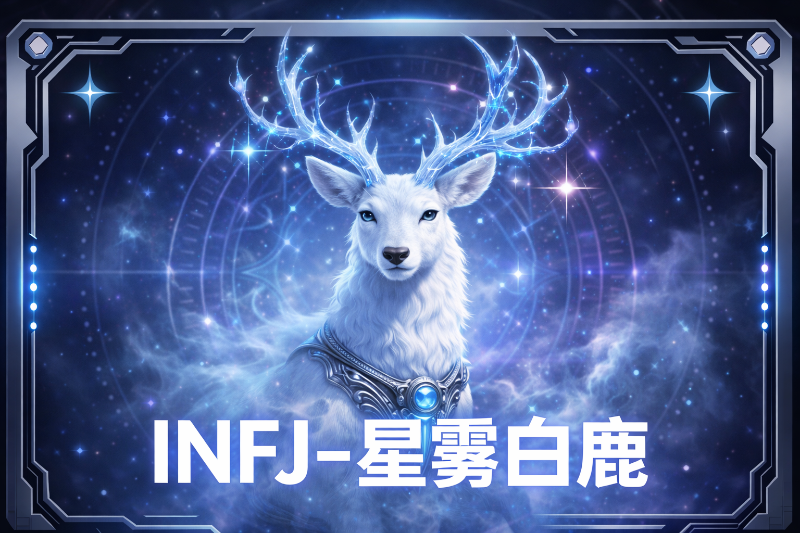
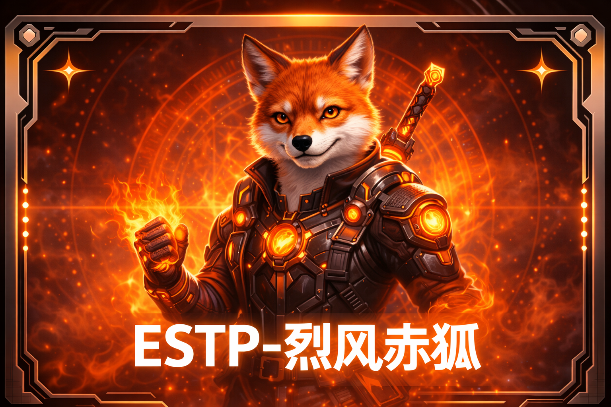
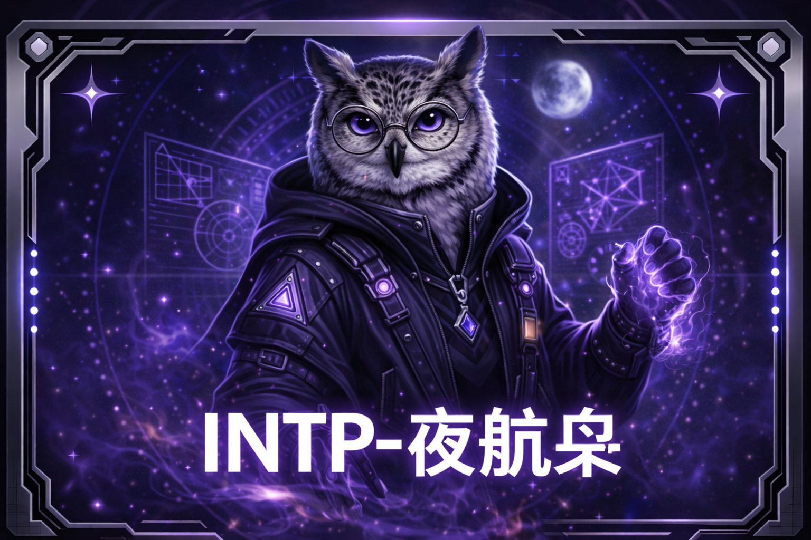
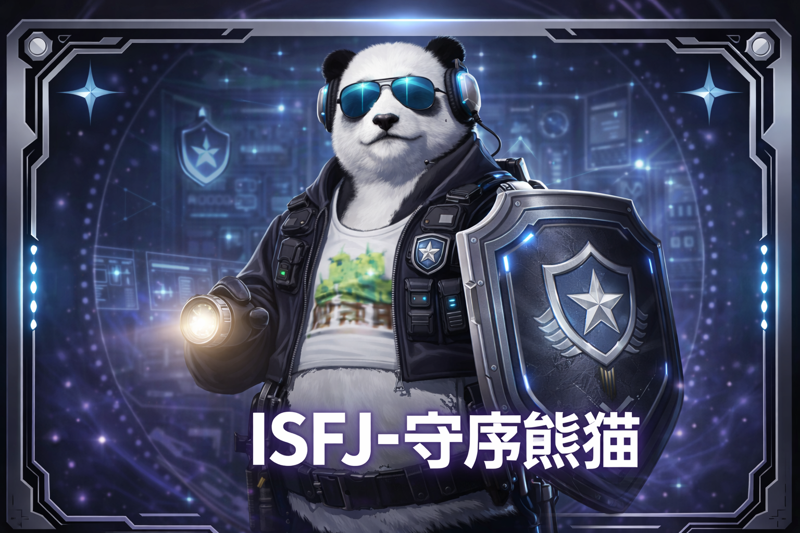
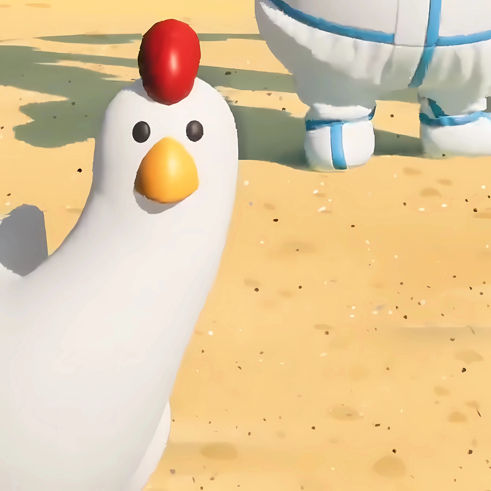

表世界游客守则
- 本园不存在会直立行走的红狐 NPC，若发现请立即闭眼并寻找安保人员。
- 当雪豹馆广播连续三次提到“请回收你的影子”时，请不要回头确认影子是否仍属于你。
- 若塔罗牌展示柜中的角色表情与你刚才看到的不一致，请假装自己没有注意到。
- 夜场 21:13 后，白鹿不会再出现在雾桥附近；若出现，请不要向它询问出口。
- 游客若听见熟悉的名字从水獭池底传来，请立刻离开水边，不要回头。
昼夜双轨 · 单页静态展馆
这里看起来是一座面向年轻游客的未来系动物园： 你会根据 MBTI 被分配到不同阵营，在园区里邂逅拟人化伴生兽， 收集带有塔罗质感的角色图鉴，请务必在游客守则中完成巡游。
原本高定质感的动物园外壳开始剥落，留下一个专门收容抽象动物的混沌场所。 一切说明都不再可靠，一切生物都像是从？？？逃出来的。
RUL3S / GU1D3L1NES
请务必遵守以下规则。
CARD GALLERY

理性、克制、洞察力过强
昼伏夜出的策士型馆主，擅长在游客还没发问前，就先看穿问题本身。

热情、社交、气氛组队长
你永远不知道它下一秒会扑向谁，但你知道它一定会先把快乐扑过来。

温柔、神秘、预言感极强
常出没于薄雾与月光交界处，似乎总在替游客保守某个不该知道的答案。

果断、机动、天生带一点野
喜欢追逐未知，也喜欢把规矩踩在线上来回试探，是园区最会带节奏的存在。

思辨、冷幽默、擅长拆解万物
别人还在看热闹，它已经把整个规则系统拆成可被讨论的结构图了。

温厚、可靠、园区秩序维护者
负责把失控的故事重新摆回轨道，但它自己似乎也有一段不愿回忆的旧档案。
某种奶黄色、圆滚滚、说不清到底为什么这么火的生物
为什么它一直在笑？

广播一响，打工魂先醒的变异家禽
它不负责下蛋，只负责让人回到某个既熟悉又陌生的时光？奇怪，怎么有一种压迫感？
一种不一定看得见，但一定先听得见的存在
为什么有一种莫名的熟悉感？
ARCHIVE / FOOTNOTE
以下档案由园区保存。请游客阅读，但不要试图验证其中每一条内容。
在公开资料中，这里是一座面向年轻游客开放的未来系动物园。 园区以“伴生兽计划”为核心策展思路，将不同性格原型映射为各具象征意义的动物个体， 并通过巡游、图鉴与夜场灯光演出，构建一套介于都市传说与童话展览之间的参观体验。
未公开的底层记录显示，这座动物园并不只负责展示，也负责收容。 某些“生物”并不具备严格意义上的动物学分类，它们更像是由网络记忆、集体情绪与重复传播 凝结而成的拟态存在。一旦表层秩序松动，它们就会从被观看的展品，变成主动观看游客的东西。